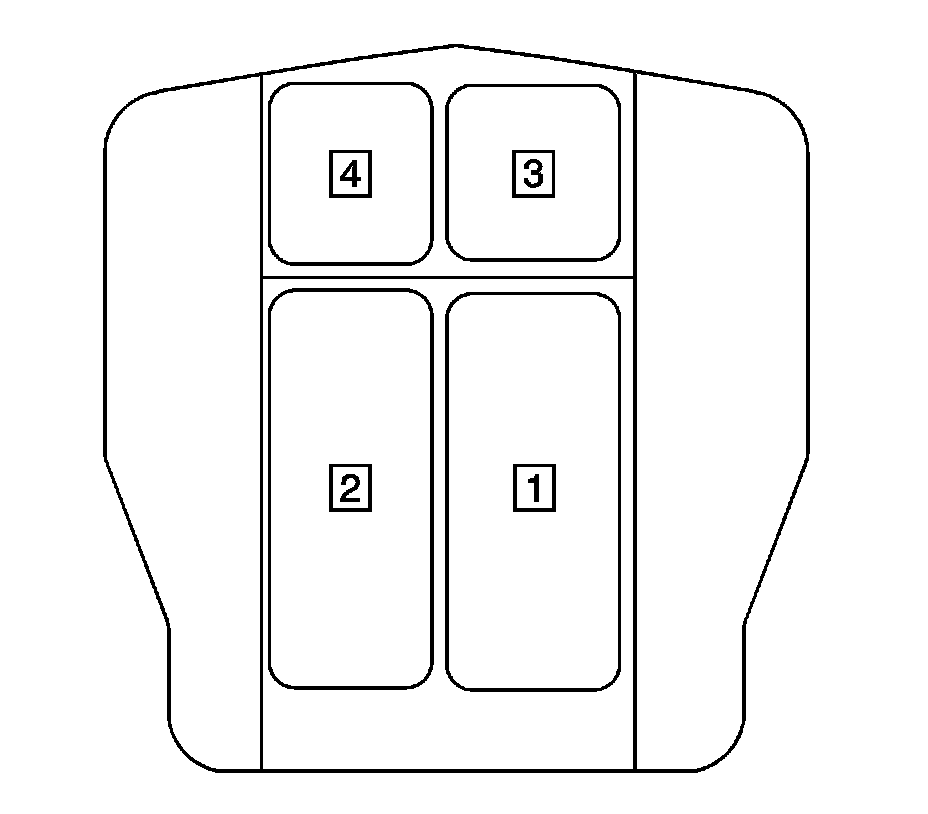
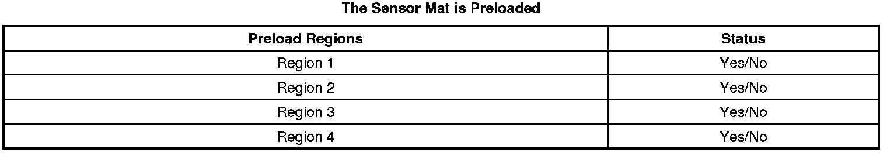

Passenger Presence System Preload Test
Passenger Presence System Preload Test
Introduction
The Passenger Presence System (PPS) is a calibrated system that requires checking for preloads within each region when the system has been serviced or replaced. If the passenger seat bottom cushion, seat bottom trim, or heater pad has been serviced, reinstalled, or removed for any reason, the procedure below will check for any preloads on the PPS. The PPS module cannot be tested for preload until it is unlocked using SPS programming. A service replacement PPS module does not require an unlock procedure prior to an initial preload test. Once a preload test has been performed, the PPS module will lock regardless of a pass or fail status. If a module needs to be retested, it must first be unlocked with SPS programming. Before you start, read these procedures carefully and completely. For further information regarding the PPS, refer to SIR System Description and Operation (Description and Operation) .
Important:
* The PPS will not function properly if the PPS detects a preload within a region.
* The Diagnostic System Check - Vehicle (Initial Inspection and Diagnostic Overview) must be performed after successfully completing the preload test procedure to ensure the system is functioning properly.

The PPS will fail the preload test when a region has detected a preload/pressure on it. If a preload test fails, the scan tool will display a chart as illustrated below. A Yes status indicates which region(s) have a preload condition. Refer to the chart below and the above illustration to identify the failed region.

Passenger Presence System Preload System Test Procedure (New Module)
1. Empty the front outboard passenger seat.
2. With the scan tool, perform the Preload Passenger Presence System procedure.
3. If the test fails, adjust the seat bottom trim, and massage the cover to ensure unwanted pressure is not present in the specified area. Proceed to the Passenger Presence System Preload Test (Existing Module) to retest after adjustment is made.
4. Once the test successfully completes, cycle the ignition key OFF.
5. Perform the Diagnostic System Check - Vehicle (Initial Inspection and Diagnostic Overview) after successfully completing the preload test procedure to ensure the system is functioning properly.
Passenger Presence System Preload System Test Procedure (Existing Module)
1. With Service Programming System (SPS) (Programming and Relearning) , unlock the PPS module.
2. Empty the front outboard passenger seat.
3. With the scan tool, perform the Preload Passenger Presence System procedure.
4. If the test fails, adjust the seat bottom trim, and massage the cover to ensure unwanted pressure is not present in the specified area, and restart the Passenger Presence System Preload Test (Existing Module).
5. Once the test successfully completes, cycle the ignition key OFF.
6. Perform the Diagnostic System Check - Vehicle (Initial Inspection and Diagnostic Overview) after successfully completing the preload test procedure to ensure the system is functioning properly.